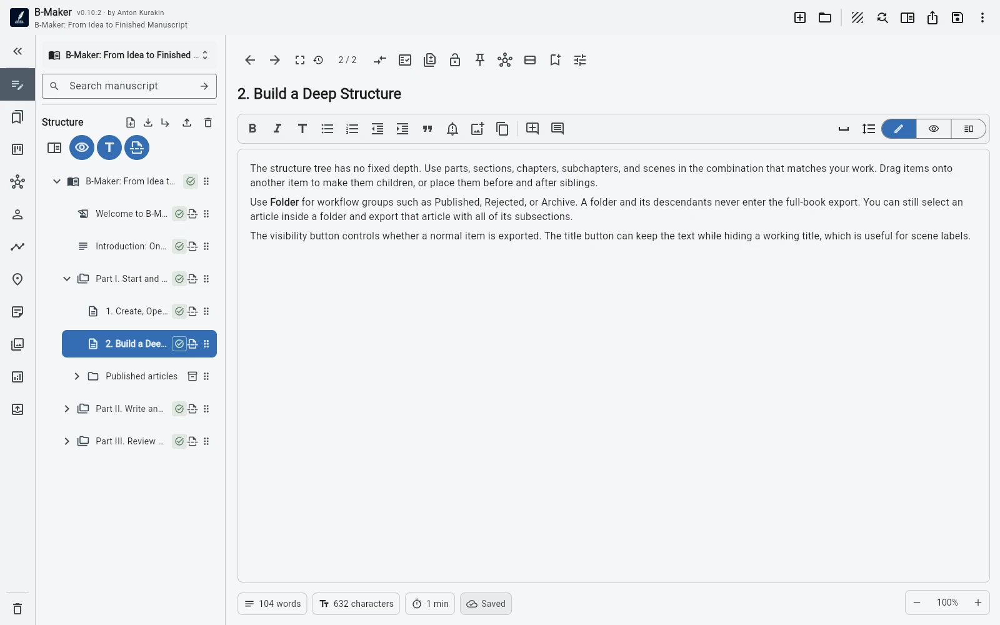

B-Maker может хранить статьи, эссе, исследования и структуру книги в одном переносимом проекте. Черновики остаются под рукой, опубликованные материалы можно убрать в организационную папку, исключённую из экспорта книги, а любой раздел всё равно остаётся доступен для поиска, версий, редактирования и отдельного экспорта.
Большая книга часто начинается не с «Главы 1»
Она начинается с фрагментов: статьи, которая неожиданно получила продолжение, нескольких заметок вокруг одной темы, исследования, доклада или серии публикаций. Пока файлов немного, обычный текстовый редактор справляется. Потом появляется архив, который приходится помнить и обслуживать отдельно.
B-Maker рассматривает сам архив как авторский проект. Можно начать с одной статьи и не строить сложную систему заранее.

Простой рабочий процесс для статей
Например, проект может начинаться с папок Черновики, Опубликованные, Исследования и Черновик книги. Активные материалы остаются сверху. После публикации статья переносится в «Опубликованные», папка сворачивается — и завершённые тексты перестают постоянно занимать внимание.
Организационная папка может быть исключена из книжного экспорта вместе со всем поддеревом. Поэтому архив спокойно живёт рядом с будущей рукописью, но не попадает случайно в EPUB или PDF.
Версии полезны не только романистам
Статья тоже редко пишется за один проход. B-Maker хранит несколько редакций внутри одного раздела: их можно сравнить, одну версию заблокировать как готовую и позже вернуться к старому направлению. Не нужны файлы статья-финал.docx, статья-финал-2.docx и статья-ТОЧНО-финал.docx.
От серии статей к рукописи
Когда вокруг темы накопится материал, архив не нужно пересобирать заново. Связанные публикации можно собрать в коллекцию, сохранить поиск или создать новую ветку в дереве рукописи. Заметки с карты идей превращаются в реальные главы. Опубликованные версии при этом продолжают лежать в архивной части проекта.
Такой сценарий особенно полезен авторам нон-фикшна, техническим специалистам, консультантам, исследователям и тем, у кого будущая книга растёт из материалов, написанных за месяцы или годы.
Сегодня статья, позже книга
B-Maker позволяет экспортировать не только весь проект, но и выбранный раздел со вложенными подразделами. Из одного проекта сегодня можно получить отдельный DOCX для редакции, а через год — EPUB целой книги.
Когда такой подход оправдан
Он особенно полезен, если вы регулярно публикуетесь, хотите единый поисковый архив, повторно используете исследования или предполагаете, что короткие материалы со временем сложатся в длинную работу. Если каждая статья полностью независима и вам никогда не нужны версии, планирование или общая структура, обычной папки с файлами может быть достаточно.
Начните с одной статьи.
Не стройте издательскую систему раньше текста. Откройте B-Maker, напишите первый материал и усложняйте проект только вместе с ростом собственной работы.
Связанные руководства
Local-first программа для текстов · Кроссплатформенная программа для авторов · Программа с картой идей